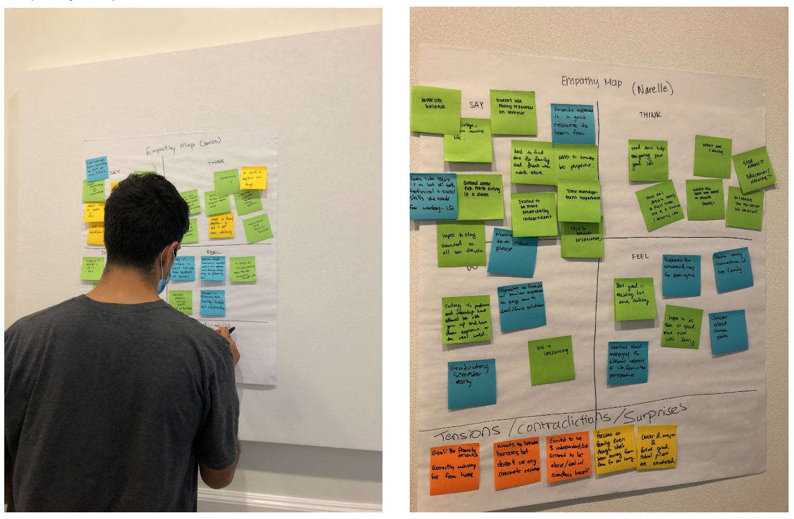

Helping those near and far away to bring the flavors & tastes of home into their kitchens.
Human Computer Interaction
September - December 2021
UI/UX Designer
Fiona Lin and Kiran Misner
Figma, prototyping, Jamboard
From our interviews, we found that one of the main problems people faced was feeling a disconnect from the familiar home life that they had had with the new, independent life that they are now living. They struggled to find ways to integrate home into their new lives and wanted something that allowed them to connect with their culture outside of the place where they grew up with it.
We sought to look at how young professionals, both those in the working world and those about to enter, have transitioned from their university days into their adult life. Through interviews with three young adults, 2 of which were in the workforce and 1 who plans on entering it following college graduation, we were able to get a sense of what things excite these young professionals about adulthood and what still remains a cause for worry.
Task 1: Finding a Family Recipe
Lisa is feeling homesick at college and wants to recreate the Ethiopian spiced lamb stew recipe her mom always made for her growing up. She’s looking up Ethiopian lamb recipes online but does not know which one will actually be good. She also really just wants the one that her mom made for her because it reminded her of her childhood and family.
Task 2: Upload/Create recipe to put inside a shared group/family
Lisa is FaceTiming her mom and sister when she realizes that her mom is making many traditional dishes for the upcoming holiday. Both her sister and her are intent on making the same dishes to celebrate the holiday (miles away from her mom), so they ask for their mom’s famous family recipe. Lisa’s mom then takes a photo of the family recipes that she has and uploads it to their family group on our app, allowing Lisa and her sister to get all the family’s recipes in one place, where they can access them whenever they want without having to ask their mom again.
Task 3: Finding a Place to buy ingredients
After receiving the family recipe from her mom, Lisa now needs to find a place to buy all the ingredients required for the recipe. This is often really hard because local grocery stores do not really sell spices or ingredients required for recipes from other cultures. The app will provide Lisa with places near her location that sell the required ingredients for the recipe. She will be unable to map from her location to the stores to buy the required ingredients and then be able to start making her dish once she gets back home.
In retrospect, we wished that we put more time into designing our webapp such that it not only captures our progress throughout the project, but can also act as a product website that introduces our product professionally. We believe that that would have been a very good way for us to showcase our product in the future, outside of this class. Additionally, we also wished that we spent more time in user testing with our prototype. There are definitely still a lot of kinks that can be worked out and that can only be drawn out through further user testing.
This project took us through the very first steps of ideation to storyboarding to actual prototyping of an app. We started off slow with simply a general idea and direction and slowly narrowed down our ideas through interviews and several rounds of discussions. After low-fi prototyping and additional testing, we were able to produce a hi-fi prototype through figma that provides a general idea on the flow of the app. As a result of this project, we now have a fully functioning prototype with an idea to a solution that we have tested and verified with multiple users in our target audience.
While our app is currently prototyped to the extent that we are satisfied with at the moment, we believe that it can be extended in the future to include more features that will allow more people to interact with each other on the app. One modification that we discussed was being able to edit or modify another person’s recipe or provide suggestions for their recipes. Secondly, another feature we think would be valuable to add would be the ability to share recipes via other social media apps like facebook messenger and text messaging.
In addition to additional features the next step for this project would be to actually implement and code this prototype so that it is actually functional. As most of the team are computer science majors with experience in app development, this is not a very difficult task and we are confident that we will be able to extend this project in the future.
{kind=link}
{kind=link}
{kind=link}